Can Bluetooth Low Energy 6.0 Back Up Wi-Fi Robotic Teleop? Throughput, Latency, FSU, Soak, and Physical Stop Testing
I. Executive Summary
Benchmarking bluetooth low energy hardware, at peak one-way throughput of up to ~195 KB/s is measured using the open source Zephyr GATT stack. Duplex GATT Zephyr numbers exceed 200 KB/s. Included for side-by-side comparison are Nordic Semi closed sourced SDC runs.
A 25 hour soak test reveals a stable connection in a close proximity bench test, and shows zero disconnects, timeouts across 4.9 million round trips. If heartbeat stops, a watchdog confirms via hardware that a STOP command is implemented within just over 200 ms.
Results indicate that promise is shown for utilizing BLE 6 for a backup teleoperation communication, and control channel. BLE 6 throughput is adequate for high priority streams such as heartbeat, safety, control etc.
As far as I'm aware, these are the first reproducible BLE 6 Frame Space Update (FSU) numbers to be published. FSU increases throughput by upwards of 20%, while also reducing latency in near every SDC and Zephyr configuration tested by 2 to 9 ms (Zephyr), with idle latency unchanged. FSU shows improvements for one-way, duplex, GATT, and CoC BLE regimes. SDC lowers by 1 - 20 ms, at most loaded stages.
BLE 6 is not perfectly independent of 5 GHz Wi-Fi failures, nor is it perfectly correlated with 5 GHz Wi-Fi failures. Therefore BLE 6 may be examined as a robustness upgrade improvement over 5 GHz Wi-Fi robotics teleoperations.
The results do not prove safety certification, nor guaranteed reliability performance.
Benchmark methodology, firmware (with the exception of SDC), and software is open source. Recreation is encouraged, and welcomed.
II. Key results
Key results are shared below. Verification and recreation of results is encouraged using recreation steps, and firmware/software found in section VII.
Throughput
Table 1: selected one-way and duplex throughput at the stated intervals (KB/s)
| Data path | Stack | No FSU | FSU | Increase % |
|---|---|---|---|---|
| GATT one-way | Zephyr | 158 KB/s @ 7.5 ms | 189 KB/s @ 7.5 ms | 20.2% |
| GATT one-way | SDC | 127 KB/s @ 7.5 ms | 158 KB/s @ 7.5 ms | 24.4% |
| L2CAP CoC one-way | Zephyr | 155 KB/s @ 15 ms | 186 KB/s @ 15 ms | 19.8% |
| L2CAP CoC one-way | SDC | 156 KB/s @ 15 ms | 172 KB/s @ 15 ms | 10.0% |
| GATT duplex* | Zephyr | 184 KB/s @ 25 ms | 201.5 KB/s @ 25 ms | 9.5% |
| GATT duplex* | SDC | 186 KB/s @ 25 ms | 206 KB/s @ 25 ms | 10.8% |
| CoC duplex* | Zephyr | 187 KB/s @ 25 ms | 205 KB/s @ 25 ms | 9.6% |
| CoC duplex* | SDC | 186 KB/s @ 25 ms | 205 KB/s @ 25 ms | 10.2% |
* duplex entries throughput are both directions summed, measured at 25 ms. duplex FSU gain appears only at longer intervals. At shorter intervals of 7.5 ms and 15ms, duplex FSU gain is nil, or smaller.
Duplex/aggregate improvement depends on the interval (see section IV FSU duplex illustration). At 7.5 ms, and 15 ms there is no FSU gain (0) for GATT. In the benchmark's CoC test, we send independent traffic in each direction over one channel.
Solid lines represent BLE 6 frame space update (FSU) firmware measurements. Dashed lines represent base Zephyr, or Nordic Soft Device Controller (SDC) firmware (sans FSU).
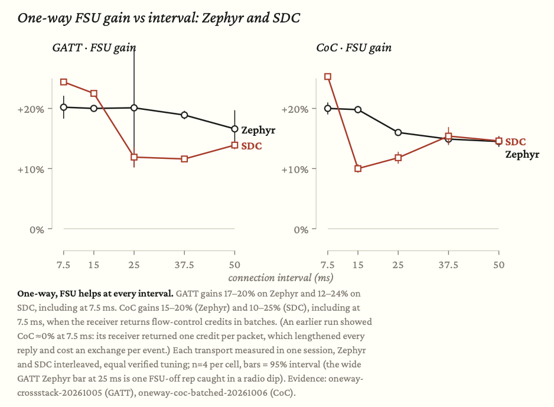
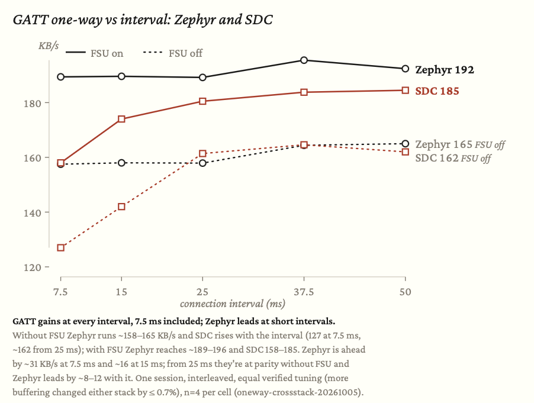
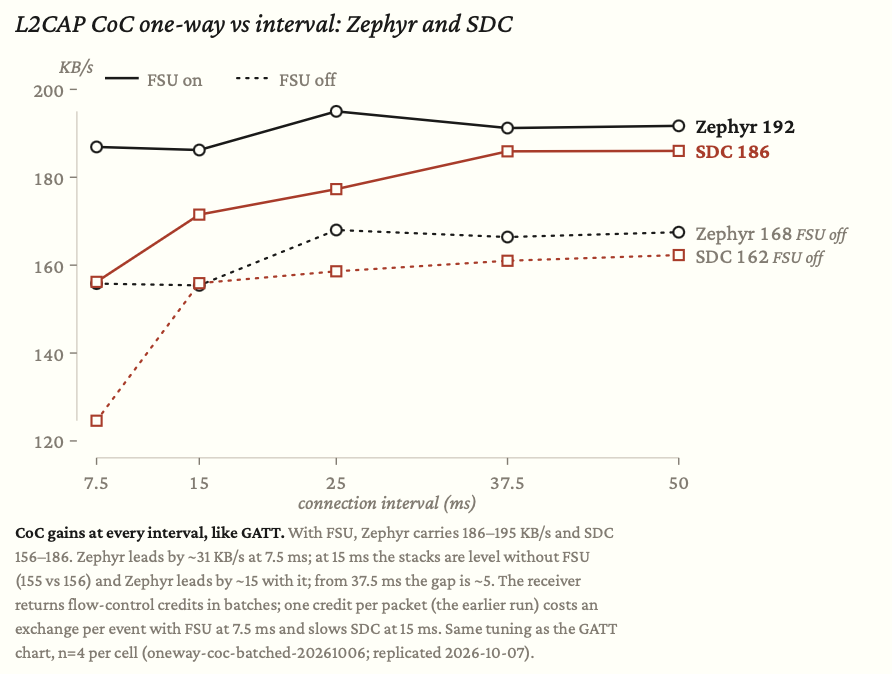
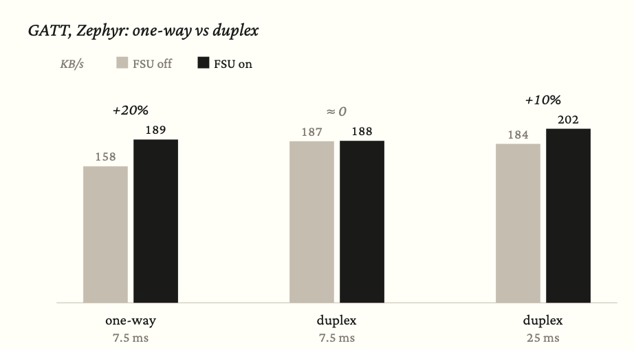
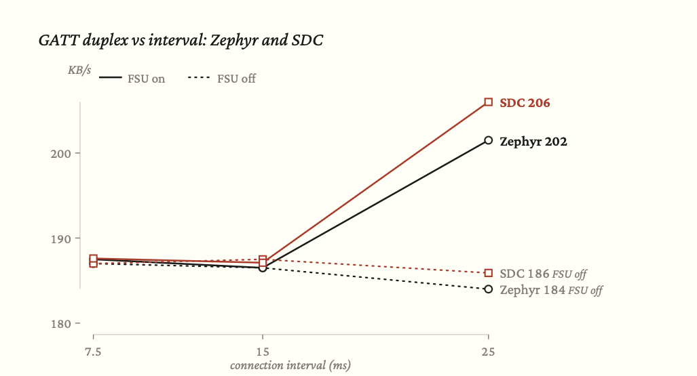
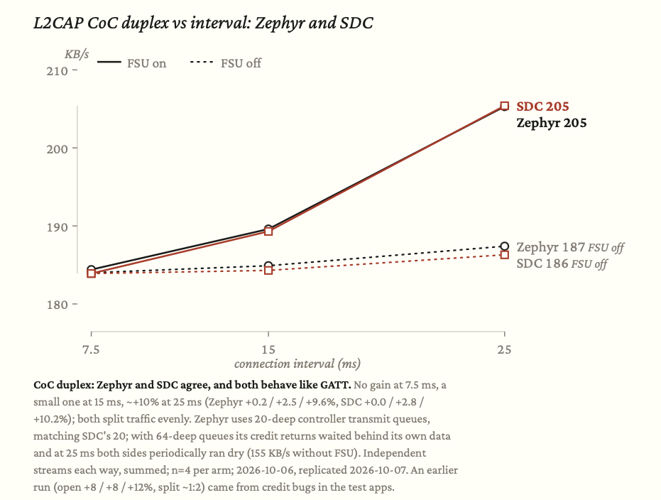
FSU and other Throughput Observations
- Enabling FSU causes a bump in throughput, as high as ~+25%.
- Zephyr peak throughput is achieved at intervals under 40 ms interval.
- For GATT, the Zephyr experimental FSU branch achieves superior throughput than that of Nordic Semi's Soft Device Controller (SDC) at 7.5 ms by ~30 KB/s, and at 15 ms by 16 KB/s.
- For CoC, Zephyr and SDC are about the same without FSU at 15 ms. With FSU, Zephyr leads with ~15 KB/s.
- From around 25 ms interval, the Zephyr and SDC stacks converge, with Zephyr inching ahead of SDC by 4 - 18 KB/s with FSU on.
- SDC CoC gains about at +25.3%, or 31.6 KB/s at 7.5 ms.
- SDC GATT throughput bump one way at the shortest connection interval at 7.5 ms resulting in +31 KB/s, or a +24.4% throughput bump (with a RTT of ~12.6 ms).
- The maximum throughput bump for the open Zephyr GATT stack one way is approximately +32 KB/s, or a +~20% increase at 15 ms connection interval (with a RTT of ~27.3 ms).
- To roughly obtain round trip time (RTT) multiplying the interval times 1.5 - 2. For instance, an interval of 25 ms results in ~37.5 - 50 ms RTT.
- FSU benchmarks show throughput improvements in both GATT, and L2CAP CoCa variants.
- Duplex with FSU enabled approaches or exceeds 200 KB/s for both SDC, and Zephyr.
Latency under load
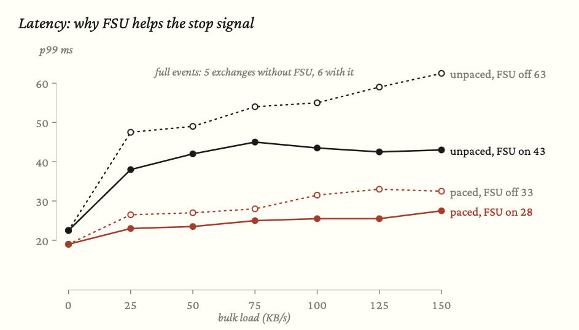
Through the benchmarks I noticed that as we ramp from 0 KB/s towards the upper end of throughput (e.g. 150 KB/s), the p99 latency increases ~three times (e.g. from ~20 ms to ~60 ms RTT). By pacing the send and holding the sender from firing off a send until the prior send is complete, latency is halved (i.e. queue management). Furthermore, simultaneously pacing signal, and also turning on FSU shows further ~15% latency (5 ms) reduction.
Concurrent load testing was conducted at 7.5 ms interval across Zephyr, and SDC stacks.
Latency observations
- Latency is "good enough" for the teleoperation use case.
- The benchmark work did not optimize for minimizing latency; it may be interesting to explore reducing latency for the realtime haptic feedback teleoperation use case (e.g. sub 20 ms RTT performance requirement).
- The above said, GATT paced + FSU at 7.5 ms interval measures p99 16 - 19 ms, just below 20 ms at close range. The chart above shows values of ~20 - 28 ms with the boards spaced a bit further away.
24 hour (*25.1 hours) Soak Test
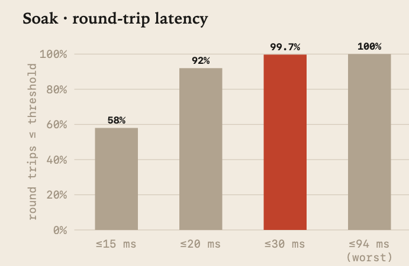
The soak test consisted of leaving devices stationary a few feet apart over the course of just over ~25 hours.
Soak test numbers:
- Zero (0) disconnects, losses, and/or faults.
- 4.9 million round trips, of which 58% equal to or under 15ms, 92% equal to or under 20 ms, and 99.7% equal to or under 30 ms, with the worst single RTT measurement logged at 94 ms.
- 92 idle -> saturated cycles.
Watchdog, lost heartbeat, and stop reaction time
Stop reaction time, upon heartbeat loss was physically confirmed via a watchdog + logic analyzer setup. The watchdog was programmed to issue a "STOP" command upon not detecting heartbeat for 200 ms. A physical STOP output was asserted about 200 ms after the last valid heartbeat.
The test above provides example engineering design & behavior of a robot in the worst-case scenario of 1. Wi-Fi loss, and 2. BLE backup link loss.
III The wireless robot teleoperations problem
In exploring the exciting to me frontier of robotics I set off on a path of tinkering to understand the bounds of current wireless teleoperations setups for robots. In the spirit of tinkering, I focus on open source stacks as much as possible, and stay away from proprietary closed source.
A wired control link may not always be practicable if operating outside a controlled manufacturing environment.
In the real world there are non-ideal internet connectivity conditions. Your robotic fleet may be operating in a fabrication yard, or a steel hull ship (https://nvlpubs.nist.gov/nistpubs/ams/NIST.AMS.300-9.pdf, https://ieeexplore.ieee.org/abstract/document/9024035).
There may be competing wireless signals - routers that implement modern Wi-Fi standards (e.g. Wi-Fi 5, 6, 6E) operate at 5 GHz, and/or 6 GHz frequencies, whereas BLE 5 operates at 2.4 GHz. Older Wi-Fi standards operate in the 2.4 GHz spectrum. Wi-Fi 6 also operates at 2.4 GHz, and Wi-Fi 7 Multi-Link Operation increases throughput by combining 2.4 GHz, 5 GHz, and/or 6 GHz frequency bands, which potentially re-introduces the 2.4 GHz Wi-Fi - Bluetooth interference problem.
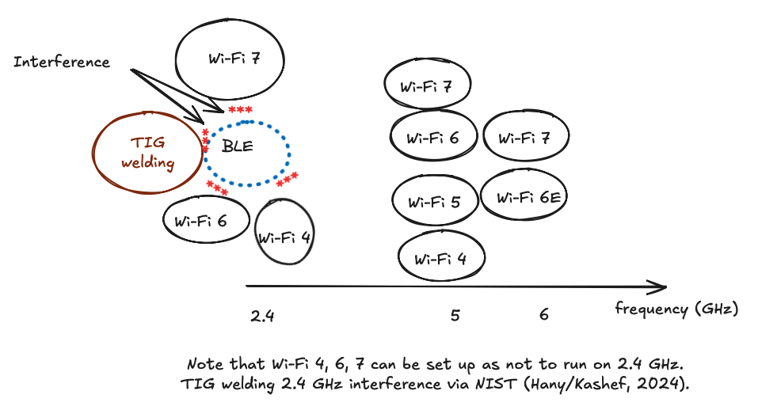
In benchmarking the performance of an example teleoperations modern stack (an article for another time) I asked myself - (how) might bluetooth serve as a backup safety & control link?
A wireless signal as a backup to another wireless signal may not be a good fit for wireless setup that does not minimize interference (e.g. Wi-Fi operating in the same 2.4 GHz band as BLE).
However, when carefully designed wireless connectivity can serve as a way to reduce wireless fragility, and improve robot teleop heartbeat, and control robustness.
The original questions I set out to answer.
1. What is BLE's measured, real-world throughput?
2. Specific to teleoperations, how does the throughput compare to the needs of a robotic teleoperations heartbeat, control operations?
3. What is BLE's measured, real-world Latency?
4. How does latency compare to the real world demands of an actively controlled, or passively monitored teleoperator?
5. What are the benefits of the new BLE 6 capability in Frame Space Update (see 8.2.2.2. https://www.bluetooth.com/core-specification-6-feature-overview/)
IV BLE 6 Frame space update (FSU)
Below is a simple graphic of the BLE 6 FSU functionality. In short, FSU update is designed to allow the reduction of the amount of waiting between chatter.
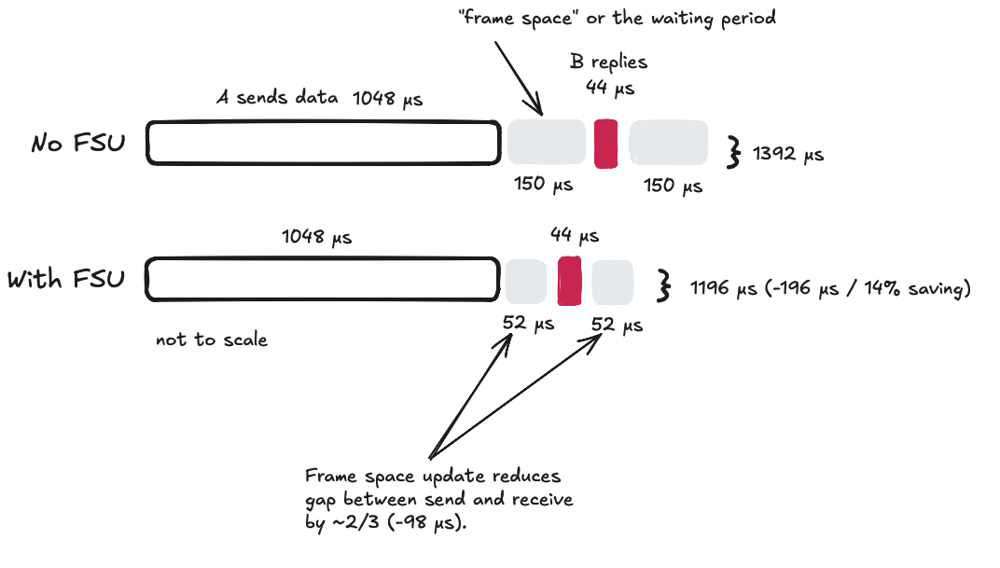
Note that Zephyr negotiated 52 μs, whereas SDC advertises a negotiated value of 65 μs for a request for 2M only, or 70 μs for covering both 2M and 1M. The SDC value is reported, not measured.
While on paper this looks good, how does this translate in the real world in terms of throughput and latency improvements/changes (if any)? I didn't find information on the FSU topic.
Via benchmarking I found that one-way throughput FSU benefit is immediately materialized at short connection interval of 7.5 ms for GATT and CoC regime.
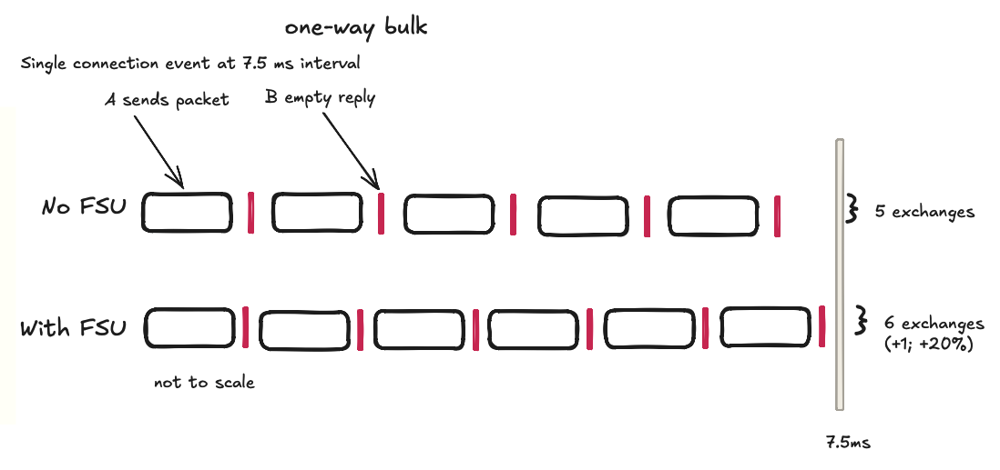
However, FSU does not show benefit for a duplex connection at the shortest connection interval of 7.5ms. There is insufficient space freed to fit an additional exchange in the interval alloted.
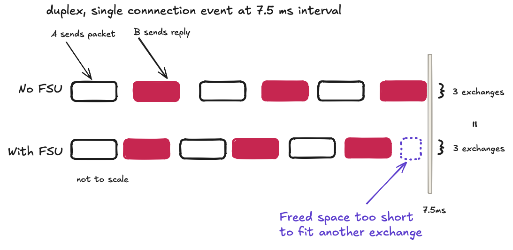
At some longer intervals, e.g. 25 ms, we see the same frame space benefit, which allows for additional exchanges, and therefore additional throughput. In essence any throughput benefits realized via the FSU update are interval dependent.
V What this does not prove
In this benchmarking study we establish real world maximum BLE 6 throughput numbers, latency upon load and pacing performance, soak test and reliability understanding, and stop time measurement.
Although promising, these results are not a certification, nor do they guarantee uptime, downtime, latency, throughput and/or reliability.
Recreation of the benchmark is encouraged, and welcome.
Field interference conditions are not comprehensively conducted.
VI Technical details
Hardware
A non-exhaustive search revealed Nordic Semi supports the latest BLE 5, 6 via hardware and firmware via the NRF-54 dev kit (https://www.nordicsemi.com/Products/Development-hardware/nRF54L15-DK). I obtained a couple of nRF54 dev kits (https://docs.nordicsemi.com/r/bundle/ug_nrf54l15_dk/page/ug/nrf54l15_dk/intro/intro.html, along with a nRF52 dev kit (https://www.nordicsemi.com/Products/Development-hardware/nRF52-DK) and nRF52 dongle (https://www.nordicsemi.com/Products/Development-hardware/nRF52840-Dongle).
Beware of imitations, and batches that don't pass the quality bar from non-name vendors. Mouser (https://www.mouser.com) delivered working hardware near instantly. I will use them going forward for hardware tinkering projects.
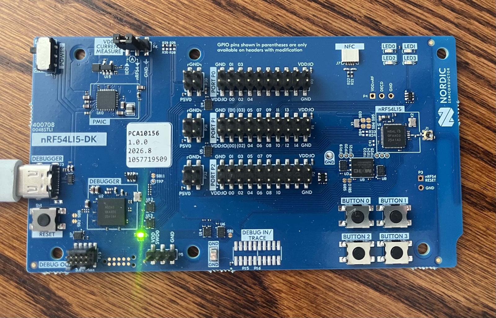
One of the nRF54 dk test boards I used
Firmware - Nordic SDC
Nordic Semi carries some flavor of proprietary firmware (https://academy.nordicsemi.com/courses/nrf-connect-sdk-fundamentals/). Nordic's SoftDevice controller (SDC) is measured. The closed source nature of SDC means that we know less about the internals than we do of Zephyr open source equivalent firmware.
Open source Zephyr
From a risk tradeoff perspective the "many eyes" theory (extended by the age of agents) lends open source bugs to being found, solutions, and improvements being discovered.
Thankfully the wizards developing Zephyr (https://github.com/zephyrproject-rtos/zephyr) continuously work at supporting the latest BLE spec, and have taken steps towards implementing the BLE 6 frame space update. In my benchmarking I build on top of prior Zephyr and FSU work. Zephyr enables the benchmarks below, and for which I am humbly grateful.
WIP/prior closed and/or non-merged PRs that have to do with FSU:
https://github.com/zephyrproject-rtos/zephyr/pull/82324 (closed)
https://github.com/zephyrproject-rtos/zephyr/pull/99473 (open)
https://github.com/zephyrproject-rtos/zephyr/pull/93783 (merged, host side)
Zephyr Version
Testing was performed on Zephyr v4.4.2 through October 2026. It is noted that the expected date for Zephyr v4.5 is in a few weeks time near end October 2026. v4.5 changes L2CAP timing, which could affect CoC results. Through benchmarking CoC numbers, my experience has been that CoC numbers are particularly sensitive to the credit mechanism.
Zephyr CoC Bug
Through benchmarking, an undocumented L2CAP CoC bug was discovered, and filed in Zephyr issues: https://github.com/zephyrproject-rtos/zephyr/issues/121544. The bug was recreated reliably, and a solution/patch outlined. As of Zephyr v4.4.2 this bug is not resolved.
Setup
Interference, and distance variables did not factor in these benchmarks. Bluetooth boards were within several inches to feet of each other.
Firmware
Nordic SoftDevice Controller: from nRF Connect SDK v3.4.0, with CONFIG_BT_LL_SOFTDEVICE=y.
-
Reported controller firmware: Version 200.12506, Build 888207768
-
HCI version: 6.3, revision 0x3039
-
Open Zephyr controller: upstream Zephyr v4.4.2 (gatt-fsu-clean, pin fee9fbc, v4.4.2-16)
- The FSU tests applied the custom fsu-m0 patch series on top of that base.
Sniffer
As I don't have ten thousand $ to drop for a professional analyzer/sniffer, a software sniffer was purpose built to solve the problem of physically verifying on-air gap reductions (i.e. FSU reductions) from 150 microseconds to 100; from 150 to 52.
The sniffer was useful in troubleshooting complex jumble of parameters, in addition to initial FSU negotiation.
NRF52 dk board was used as the hardware substrate as sniffer between the nRF54 dk boards.
Logic analyzer
A logic analyzer was used to confirm what happened after Bluetooth communication abruptly stopped. The hardware safety-chain response was verified using the logic analyzer.
About me
I'm a human non-dev who uses agents to tinker - mistakes are very possible, and nearly guaranteed. Please proceed with caution.
I am not paid by any company to purchase or recommend hardware, or achieve results a certain way.
Certainly there is space for optimization.
I am intrigued by the intersection of hardware, software, and robotics real world civilization building use cases.
If you're looking for a product tinkerer who has experience:
-working with developers,
-building relationships with customers, and
-tinkering
write me.
VII Reproduce, audit, and raw data
Below are firmware, data, and software used to conduct the benchmarks/engineering measurements & characterization.
Agents were used to build, and iterate software and firmware. Agents have completely written all docs, code, patches etc. linked below.
Build, and reproduce
---